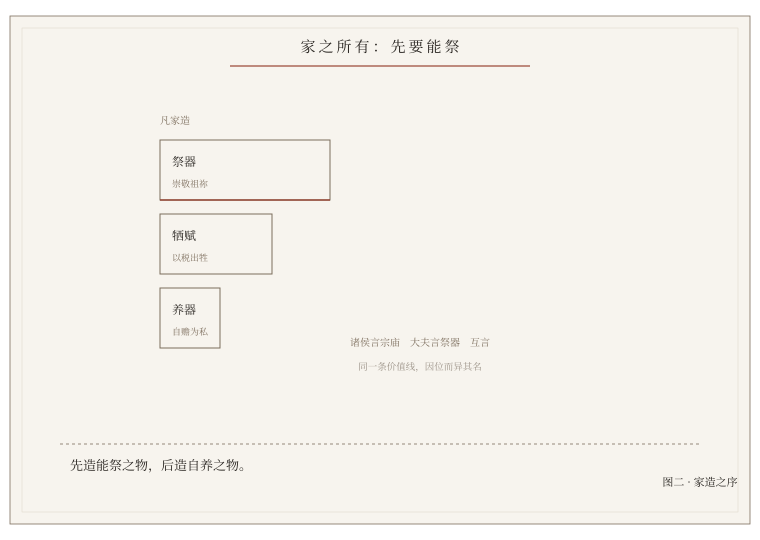

曲礼下 · 二·二十二 · 第 145 课
大夫之家开始造物，先造祭器，其次纳牲之赋，最后才造养器。注「大夫称家，谓家始造事」。
说什么事：凡家造，祭器为先，牺赋为次，养器为后。
落在哪一层：礼。诸侯的次序缩小到大夫之家。
为何编在此位：上节以国言，此节以家言。同一价值序，换了规模。
【经】凡家造，祭器為先，犧賦為次，養器為後。
【注】大夫稱家，謂家始造事。犧賦，以稅出牲。
【疏】「凡家造」，谓大夫始造家事也。大夫为家。「祭器为先」者，崇敬祖祢，故在先。「牺赋为次」者，诸侯、大夫少牢。此言牺，谓牛。即是天子之大夫祭祀，赋敛邑民，供出牲牢，故曰「牺赋」。「养器为后」者，养器，供养人之饮食器也。自赡为私，宜后造。然诸侯言「宗庙」，大夫言「祭器」，诸侯言「厩库」、「居室」，大夫言「牺赋」、「养器」者，互言也。
家造 注「家始造事」。疏「大夫始造家事」。凡家中所造之器。
祭器 祭祀之器。与「养器」相对。
牺赋 注「以税出牲」。疏「赋敛邑民，供出牲牢」。牺者，牲。
养器 疏「供养人之饮食器」。日常之器。
自赡为私 疏语。养的是自己，故为私。
互言 疏语。诸侯言宗庙居室，大夫言牺赋养器，彼此可以互换着看。
凡大夫之家开始造物，先造祭器，其次为祭牲之赋，最后才造日常饮食之器。
同一条次序，从国搬到一家之内：先祭器，后养器。家之所有，先要能祭，然后才要能吃。此节把「重先祖」由建筑转成了器物。
第一层 器之序即心之序 祭器先于养器，是承认「给祖先的那一份」先于「给自己的那一份」。
第二层 牺赋不是器物 它是以税出牲之赋，介于器与用之间。礼把它排在祭器之后，说明「有器可祭」之外，还要「有牲可献」。
第三层 自赡为私 疏一语最直：养器是给自己用的，所以宜后。礼不讳言私，只是把私排在后面。
第四层 互言之法 诸侯言宗庙、厩库、居室，大夫言祭器、牺赋、养器。同一条价值线，因位而异其名。读礼须会这种「互言」，否则以为两套制度。
与今日何干 一个家庭的开支表，先给先人（祭祀、扫墓、族中公事），再给公用，最后才是自己的日用。次序调过来，日子还是过，只是次序里那点敬意没了。
| 左 | 右 |
|---|---|
| 祭器为先 | 崇敬祖祢 |
| 牺赋为次 | 以税出牲，有牲可献 |
| 养器为后 | 自赡为私，宜后造 |
| 大夫称家 | 家始造事 |
| 诸侯言宗庙 | 大夫言祭器，互言 |
| 有田禄乃得造 | 无田禄者但为祭服 |
画一只敞口的三足器（示意祭器）居中偏左，器内空无一物；器右画一小束捆扎的牲形（只画捆绳与轮廓，不作具体牲畜），再右画一只浅盘与两只碗（示意养器）。三组自左至右排开，下方一条横线为案，案上三组之间各留一道空隙。不写文字。赭色只用在最左那只器的三足上。
